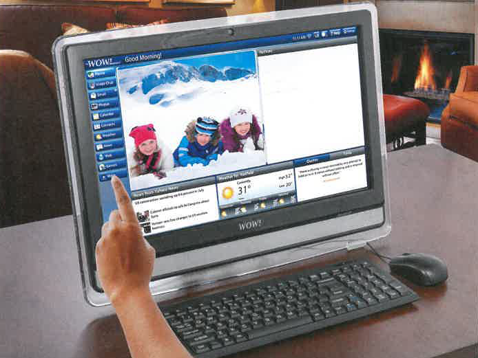

TECHNOLOGY SIMPLIFIED - BIGGER AND BETTER
Wow! A Simple to Use Computer Designed Especially for Seniors!
Easy to read. Easy to see. Easy to use. Just plug it in!

NEW
Now comes with...
Larger 22-inch hi-resolution
screen - easier to see
16% more viewing area
Simple navigation - so you
never get lost
Intel® processor - lightning fast
Computer is in the monitor -
No bulky tower
Advanced audio, Better speaker configuration - easier to hear
Text to Speech translation -
it can even read your
emails to you!
U.S. Based Customer Service
FREE
Automatic
Software Updates
"My name is Dorothy. I am 90 years old. Almost a year ago I invested in the WOW computer.
I have been so happy with the helpful service of the VIP program and the knowledgeable agents who have taken
problem calls. This is my first experience with a computer and I must say I was very nervous about getting
involved with it. Today I am comfortable with it and am amazed at all I have so easily learned. My one
regret is --why did I wait so long!!"
Have you ever said to yourself "I'd love to get a computer, if only I could figure out how to use it." Well,
you're not alone. Computers were supposed to make our lives simpler, but they've gotten so complicated that
they are not worth the trouble. With all of the "pointing and clicking" and "dragging and dropping" you're
lucky if you can figure out where you are. Plus, you are constantly worrying about viruses and freeze-ups.
If this sounds familiar, we have great news for you. There is finally a computer that's designed for
simplicity and ease of use. It's the WOW Computer, and it was designed with you in mind. This computer is
easy-to-use, worry-free and literally puts the world at your fingertips. From the moment you open the box,
you'll realize how different
the WOW Computer is. The components are all connected; all you do is plug it
into an outlet and your high-speed Internet connection. Then you'll see the screen - it's now 22 inches.
This is a completely new touch screen system, without the cluttered look of the normal computer screen. The
"buttons" on the screen are easy to see and easy to understand. All you do is touch one of them, from the
Web, Email, Calender to Games- you name it... and a new screen opens up. It's so easy to use you won't have
to ask your children or grandchildren for help. Until now, the very people who could benefit most from
E-mail and the internet are the ones that have had the hardest time accessing it. Now, thanks to the WOW
Computer, countless older Americans are discovering the wonderful
world of the Internet every day. Isn't
it time you took part? Call now, and a patient, knowledgeable
product expert will tell you how you can try it in your home
for 30 days. If you are not totally
satisfied, simply return it within 30 days for a refund of the product purchase price. Call today.
- Send & Receive Emails
- Have video chats with family and friends
- Surf the Internet:
Get Current weather and news
- Play games Online:
Hundreds to choose from!
Call now and find out how you can get the new WOW! Computer.
Mention promotional code 102238 for special introductory pricing.
1-877-699-6851
© 2015 firstSTREET for Boomers and Beyond, Inc.
81046
ADVERTISEMENT